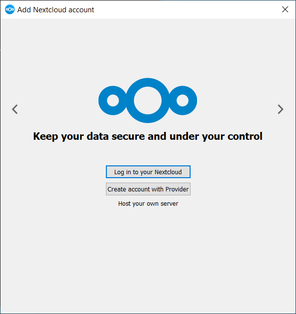
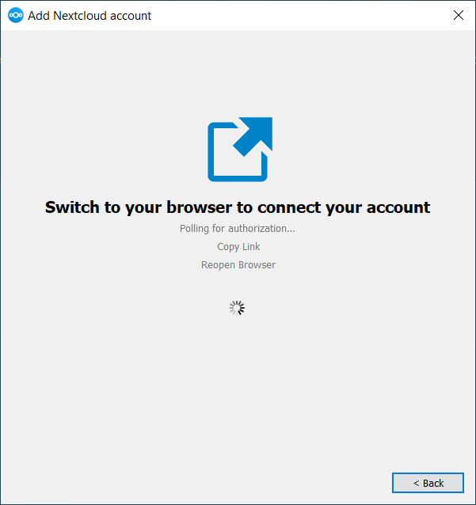

安裝
您可以從 Nextcloud 下載頁面 下載最新版本的 Nextcloud 桌面同步客戶端。該客戶端支持 Linux、macOS 和 Microsoft Windows。
目前支持的伺服器版本是發佈時最新的三個穩定版本。這意味著 latest 發佈系列支持穩定的伺服器主要版本。請參閱 https://github.com/nextcloud/server/wiki/Maintenance-and-Release-Schedule 獲取支持的主要版本。
在 macOS 和 Windows 上的安裝方式與任何軟件應用程式相同：下載程序，然後雙擊以啟動安裝，然後按照安裝嚮導進行操作。安裝和配置完成後，同步客戶端會自動保持更新；有關更多資訊，請參見 自動更新器。
Linux 用戶必須按照下載頁面上的指示添加適合其 Linux 發行版的存儲庫，安裝簽名密鑰，然後使用其包管理器安裝桌面同步客戶端。Linux 用戶還將通過包管理器更新其同步客戶端，當有可用更新時，客戶端會顯示通知。
Linux 用戶還必須啟用密碼管理器，如 GNOME Keyring 或 KWallet，以便同步客戶端可以自動登錄。
您還可以在下載頁面上找到源代碼檔案和舊版本的鏈接。
系統要求
Windows 10+（僅限 64 位）
macOS 12.0+ (64-bits only)
- Linux (Ubuntu 24.04 or openSUSE 15.5 or Alma 8 or ...) (64-bits only)
For Linux distributions, we support, if technically feasible, the current LTS releases. For BSD, we support them if technically feasible but we do not test.
Note
We do not support Citrix.
We will do our best to advise Citrix users from the desktop client point of view.
We will fix issues that are also reproducible on the standard supported systems.
Everything else is outside of our scope.
自定義 Windows 安裝
如果您只是想在本地系統上安裝 Nextcloud 桌面同步客戶端，您可以簡單地啟動 .msi 檔案並在彈出的嚮導中進行配置。
功能
MSI 安裝程式提供了幾個可以單獨安裝或移除的功能，您也可以通過命令行控制它們。如果您正在自動化安裝，請運行以下命令：
msiexec /passive /i Nextcloud-x.y.z-x64.msi
該命令將把 Nextcloud 桌面同步客戶端安裝到默認位置並啟用默認功能。如果您想禁用，例如，桌面快捷方式圖標，您可以簡單地將上述命令更改為以下內容：
msiexec /passive /i Nextcloud-x.y.z-x64.msi REMOVE=DesktopShortcut
請參見以下表格以獲取可用功能的清單：
功能 |
預設啟用 |
描述 |
停用屬性 |
|---|---|---|---|
客戶端 |
是，必需的 |
實際客戶端 |
|
桌面快捷方式 |
是 |
在桌面添加快捷方式 |
|
StartMenuShortcuts |
是 |
在開始選項單添加快捷方式 |
|
ShellExtensions |
是 |
添加檔案管理器整合 |
|
安裝
您還可以選擇僅安裝客戶端本身，使用以下命令：
msiexec /passive /i Nextcloud-x.y.z-x64.msi ADDDEFAULT=Client
例如，如果您想安裝所有功能，但不包括 DesktopShortcut 和 ShellExtensions 功能，您有兩種選擇：
您明確列出所有實際想要安裝的功能（白名單），其中
Client一律會安裝：msiexec /passive /i Nextcloud-x.y.z-x64.msi ADDDEFAULT=StartMenuShortcuts
您傳遞
NO_DESKTOP_SHORTCUT和NO_SHELL_EXTENSIONS屬性:msiexec /passive /i Nextcloud-x.y.z-x64.msi NO_DESKTOP_SHORTCUT="1" NO_SHELL_EXTENSIONS="1"
Note
Nextcloud 的 .msi 會記住這些屬性，因此在升級時不需要重新指定。
Note
您無法使用這些來更改已安裝的功能，如果您想這樣做，請參見下一部分。
更改已安裝的功能
您可以稍後通過使用 REMOVE 和 ADDDEFAULT 屬性來更改已安裝的功能。
If you want to add the desktop shortcut later, run the following command:
msiexec /passive /i Nextcloud-x.y.z-x64.msi ADDDEFAULT="DesktopShortcut"
如果您想移除它，只需運行以下指令:
msiexec /passive /i Nextcloud-x.y.z-x64.msi REMOVE="DesktopShortcut"
Windows 會跟蹤已安裝的功能，使用 REMOVE 或 ADDDEFAULT 只會影響提到的功能。
比較 REMOVE 和 ADDDEFAULT 參考 Windows 安裝程序指南。
Note
您無法在初始安裝時指定 REMOVE，因為這會禁用所有功能。
安裝資料夾
您可以通過指定 INSTALLDIR 屬性來調整安裝資料夾，如下所示:
msiexec /passive /i Nextcloud-x.y.z-x64.msi INSTALLDIR="C:\Program Files\Non Standard Nextcloud Client Folder"
當使用 PowerShell 而不是 cmd.exe 時要小心，因為正確處理空格轉義可能會很棘手。像這樣指定 INSTALLDIR 只在第一次安裝時有效，您不能簡單地使用不同的路徑重新調用 .msi。如果仍然需要更改，請先卸載，然後使用新路徑重新安裝。
停用自動更新
要禁用自動更新，您可以傳遞 SKIPAUTOUPDATE 屬性。:
msiexec /passive /i Nextcloud-x.y.z-x64.msi SKIPAUTOUPDATE="1"
安裝後啟動
要在安裝後自動啟動客戶端，您可以傳遞 LAUNCH 屬性。:
msiexec /i Nextcloud-x.y.z-x64.msi LAUNCH="1"
此選項還會移除復選框，讓用戶決定是否要在非被動/安靜模式下啟動客戶端。
Note
此選項在沒有 GUI 的情況下不會有任何效果。
安裝後不重新啟動
Nextcloud 客戶端在安裝後安排重新啟動，以確保 Explorer 擴展正確（卸載）加載。如果您自行處理重新啟動，則可以設置 REBOOT 屬性:
msiexec /i Nextcloud-x.y.z-x64.msi REBOOT=ReallySuppress
這將使 msiexec 以錯誤 ERROR_SUCCESS_REBOOT_REQUIRED``（3010）退出。如果您的部署工具將此解釋為實際錯誤，而您想避免這樣的情況，則可以設置 ``DO_NOT_SCHEDULE_REBOOT:
msiexec /i Nextcloud-x.y.z-x64.msi DO_NOT_SCHEDULE_REBOOT="1"
安裝嚮導
安裝嚮導將逐步引導您完成配置選項和帳戶設置。首先，您需要輸入 Nextcloud 伺服器的 URL。

如果您已經在 Nextcloud 實例上擁有帳戶，您可以按下 登錄到您的 Nextcloud 按鈕。如果您沒有 Nextcloud 實例和帳戶，您可能想要與提供商註冊帳戶。在這種情況下，請按 使用提供商創建帳戶。請記住，桌面客戶端可能未提供提供商支持。在這種情況下，您將不會看到此頁面，而是會被提示進入下一頁。

輸入您的 Nextcloud 實例的 URL。該 URL 與您嘗試訪問 Nextcloud 實例時在瀏覽器中輸入的 URL 相同。

現在您的網頁瀏覽器應該會打開並提示您登錄到 Nextcloud 實例。請在網頁瀏覽器中輸入您的用戶名和密碼並授予訪問權限。完成後，請返回到嚮導。請記住，如果您已經登錄到瀏覽器，則可能不需要再次輸入用戶名和密碼。

在本地資料夾選項屏幕上，您可以同步 Nextcloud 伺服器上的所有檔案或選擇單個資料夾。預設的本地同步資料夾是 Nextcloud，位於您的主目錄中。您也可以更改這個設定。
當您完成選擇同步資料夾後，請單擊右下角的連接按鈕。客戶端將嘗試連接到您的 Nextcloud 伺服器，當成功連接時，嚮導會自動關閉。您現在可以通過單擊系統托盤圖示來打開主對話框，觀察同步活動。